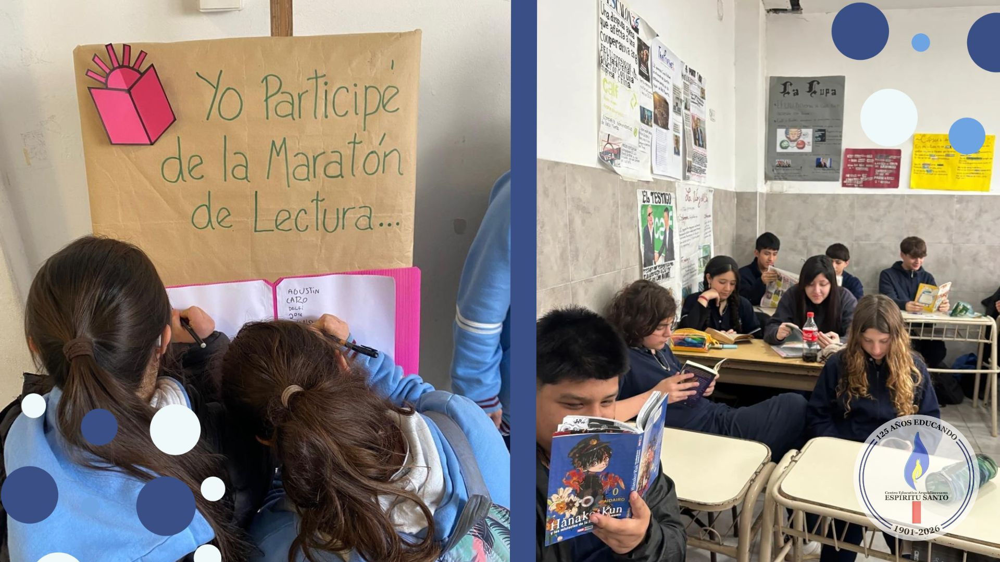
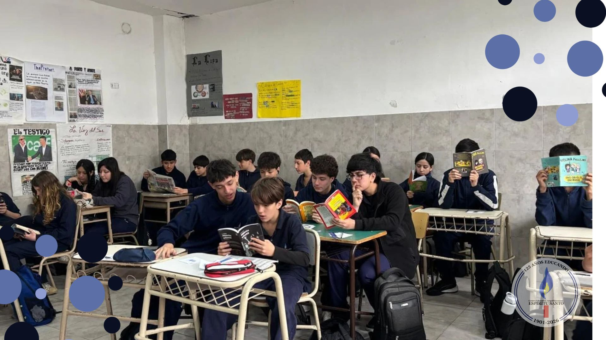

Maratón de Lectura
Por: Maia López Arrozpide y Yanina Rumacho

El día 9 de Octubre se realizó en todo el nivel secundario una actividad que consta en que cada estudiante tiene que traer un libro que le interese y los primeros 80 minutos se trata de hacer una lectura del mismo. En los dos siguientes bloques de 40 minutos, entregan una hoja con preguntas sobre el libro (de qué trató, el autor, valoración, cita que más te haya gustado, etc), que también lo acompañan con un dibujo que ellos creen que representa lo que leyeron. Luego entre todos hacen un afiche para que quede pegado en la misma aula y ahí se da por finalizado el evento.

Leer otras notas
Festejo mes de la educación
Charla sobre prevención de delitos informáticos 5º A y B
Publicidad